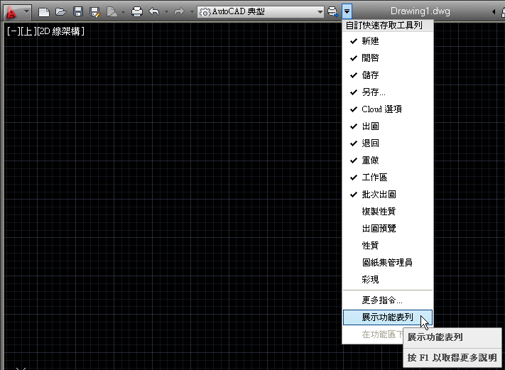
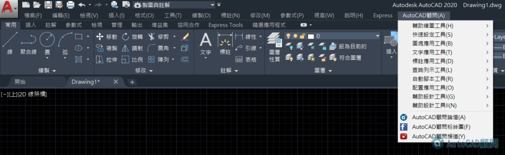
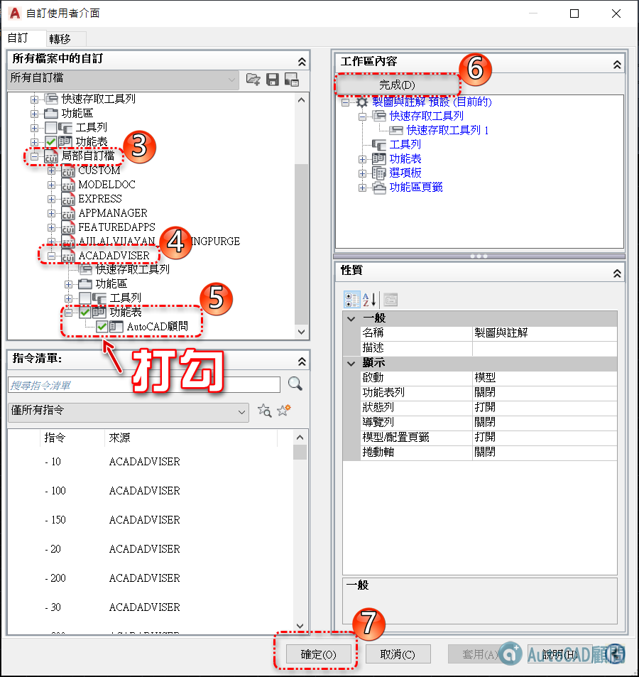

使用者若是關閉了「ACADAdviser工具列」，可以再透過以下二種方式開啟。
1.若使用「功能區」介面，需要先開啟【舊式功能表】。

2.「工具」功能表 →「工具列」→「ACADADVISER」→ 將需要的工具列打勾即可。

▼指令行方式：輸入-TOOLBAR指令，再鍵入將需要的工具列名稱即可。
代碼:
指令: -TOOLBAR
輸入工具列名稱或 [全部(ALL)]: 文字應用
輸入選項 [展示(S)/隱藏(H)/左(L)/右(R)/上(T)/下(B)/浮動(F)] <展示>:
如果沒有正常顯示【AutoCAD顧問】功能表

1.輸入 CUI指令 開啟 自訂使用者介面
2.點選目前的工作區 >> 自訂工作區

3.局部自訂檔 >> ACADAdviser >> 功能表 >> 打勾【AutoCAD顧問】
